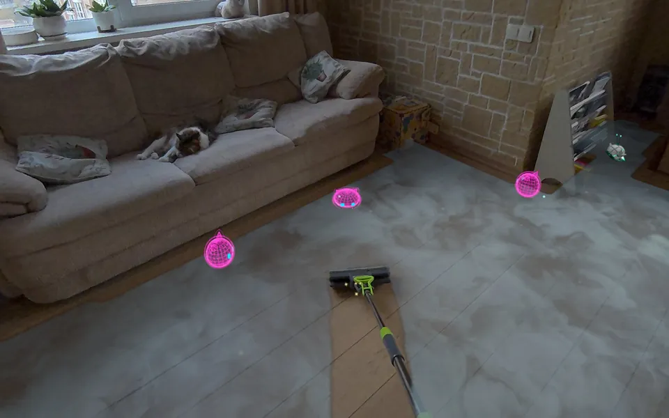
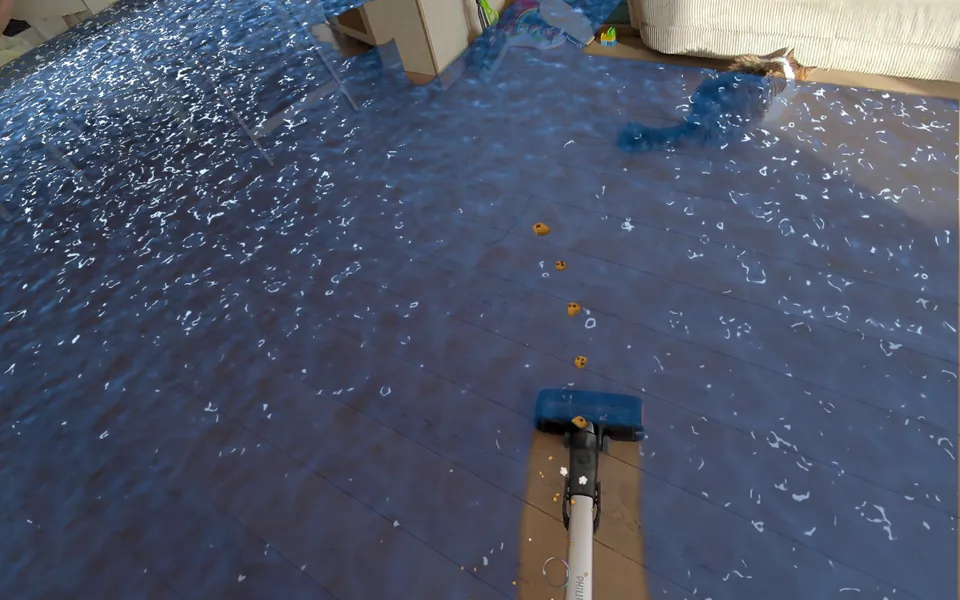
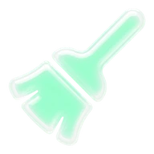
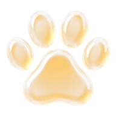
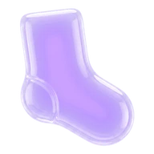
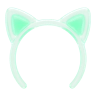
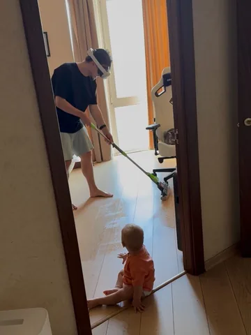

Cleaning made fun
Grab your vacuum or mop, put on your headset, and watch your floor transform. In mixed reality, every move clears a path through snow, autumn leaves, or even lava, leaving your real floor freshly cleaned underneath.

…and relaxing too!
Just turn on Zen mode: no timers, no pressure, no distractions. Just you, your space, and that oddly satisfying feeling of making things clean.

More about Dusty

All you need to start cleaning is a mop or vacuum and your Meta Quest 3 or 3S.

Mote, your robot helper, guides you every step of the way.

Find hidden lost treasures and unlock secret surprises.

Fully customizable, so the experience feels truly yours.

Your home stays yours
What the headset cameras see stays on your headset. The privacy policy says exactly what Dusty uses.
About us
Dusty is made by Nerobe Interactive, a small indie studio based in Kyiv, Ukraine. We’re a family of five: a developer, a forever-young marketer, a baby tester, and two cats who starred as models in our trailer footage. Dusty is our first project, and we’d be grateful for your support and feedback!
Write to us at support@nerobeinteractive.com
